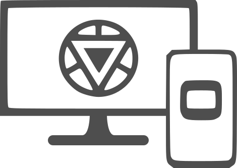
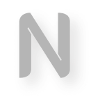
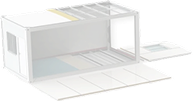

Sou desenvolvedor back-end junior com experiência em
automação de processos, desenvolvimento de sistemas
e criação de aplicações e interfaces Web.
Tudo isso, usando tecnologias como Python, JavaScript, HTML &
CSS.
E também desenvolvo com Arduino como hobbie (Usando C++)

Um projeto de landing page para uma startup canadense de casas container que buscava se inserir no mercado brasileiro.
Um gerenciador de contatos All In One. Email, WhatApp, Instagram, tudo em um só lugar.

Um projeto de landing page para uma startup canadense de casas container que buscava se inserir no mercado brasileiro.

Como desenvolvedor junior busco ter mais experiências
no mercado de trabalho e, principalmente, aprender algo
com cada projeto e oportunidade que me apareça.
Sei da tamanha importância e peso que estes aspectos tem sob
a imagem de uma pessoa, ainda mais no mundo dev, e não
sópor isso tenhos estes objetivos, mas também porque desde
criança gosto de CRIAR minhas ferraments e soluções, então
quero sempre aprender algo não só porquê quero ser um bom
profissional, mas também porque meu trabalho também é minha
paixão.
A busca por aperfeiçoar e aumentar meus conhecimentos
e vivências não são apenas por profissionalismo, mas também
por fazer parte da minha essência.
Tinha última experiência foi como voluntário
numa startup mineira de desenvolvimento de
softwares chama Elys.
Iniciei como mentorado, e posteriormente foi me
oferecida a vaga de desenvolvedor voluntário
para agregar conhecimento e experiência a mim,
e abracei a oportunidade.
Meu maior destaque foi a criação de um chatbot
para WhatsApp, a Íris, que posteriormente foi
melhorado e amplamente distribuido pela
empresa. Hoje, estando presente em outras
empresas, clientes da stratup.